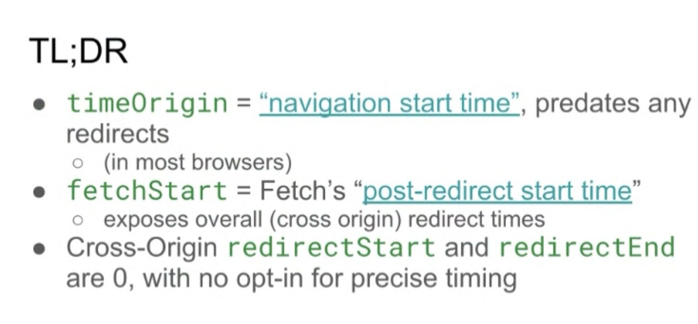
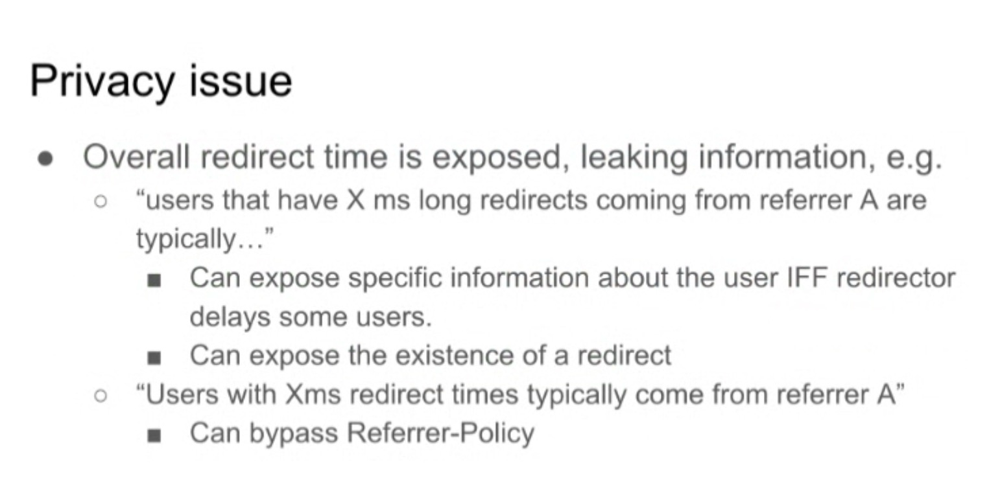
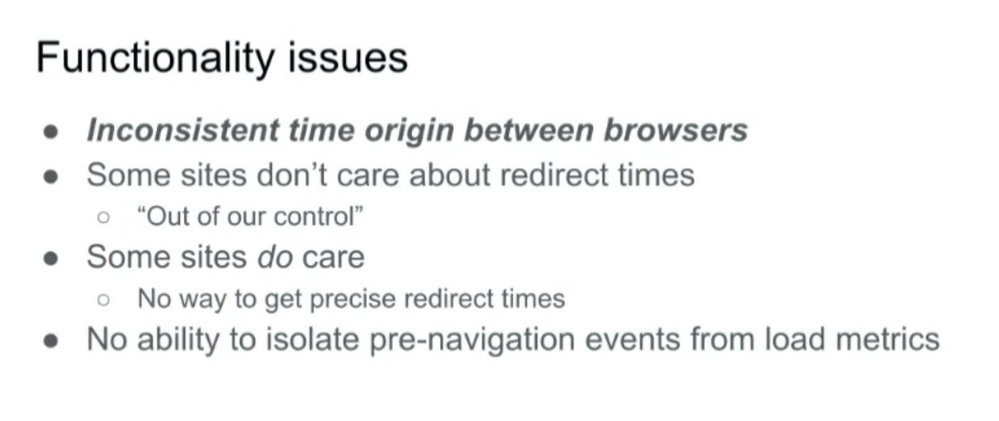
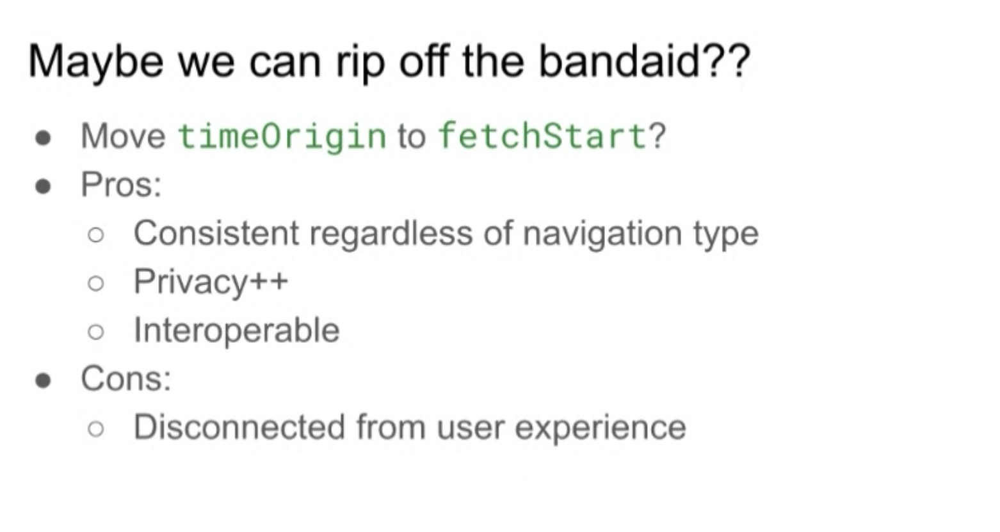
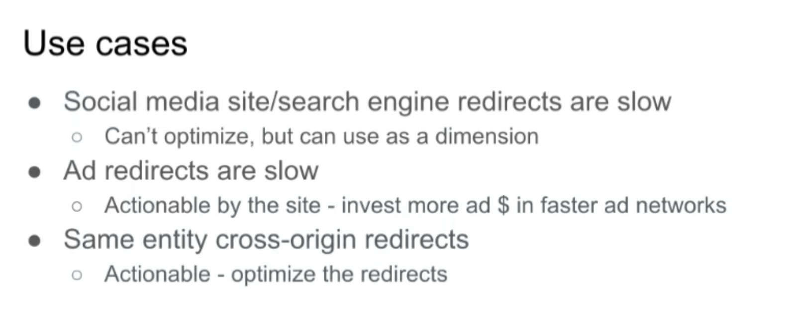
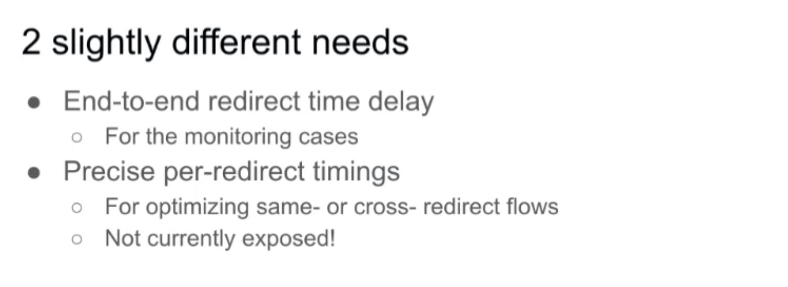
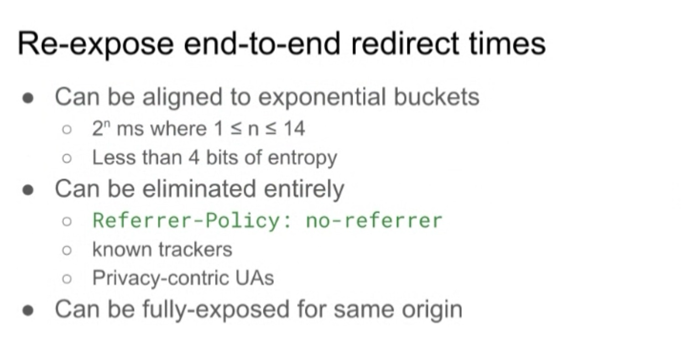
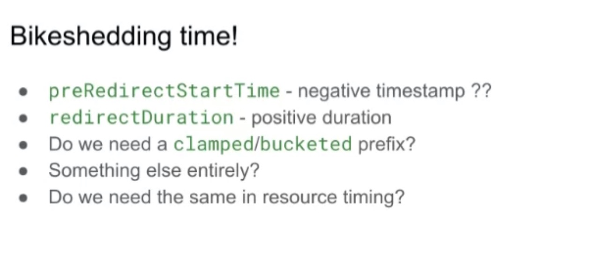
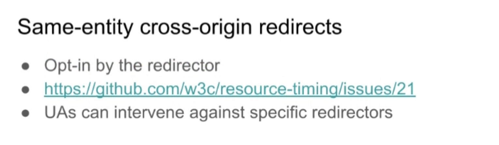

Participants
- Nic Jansma, Yoav Weiss, Andy Davies, Noam Helfman, Amiya Gupta, Jose Dapena Paz, Annie Sullivan, Dave Hunt, Guohui Deng, Barry Pollard, Bas Schouten, Benjamin De Kosnik, Noam Rosenthal, Alex Christensen, Victor Huang, Cliff Crocker, Joone ur, Philip Tellis
Admin
- Next Meeting: March 27th, 8 am PDT / 11am EDT
Minutes
NavigationTiming and redirects - NT#160 - slides
- Yoav: Long standing Github navigation-timing issue
- ... NT is exposing cross-origin redirects, even though we're hiding the precise numbers from redirectStart and redirectEnd

height: 317.95px; margin-left: 0.00px; margin-top: 0.00px; transform: rotate(0.00rad) translateZ(0px); -webkit-transform: rotate(0.00rad) translateZ(0px);" title="">- ... Difference between fetchStart and timeOrigin/navigationStart shows presence of redirect
- ... Exposes cross-origin and same-origin redirect times
- ... Overall redirect time is exposed, leaking info

height: 285.25px; margin-left: 0.00px; margin-top: 0.00px; transform: rotate(0.00rad) translateZ(0px); -webkit-transform: rotate(0.00rad) translateZ(0px);" title="">- ... Can potentially deduce certain things, e.g. if redirector introduces delay for some users (on purpose or accidental)
- ... Can expose existence of redirect in general
- ... Can deduce when users with certain redirect times come from certain referrers (with enough traffic and data), somewhat bypassing Referrer-Policy

height: 237.20px; margin-left: 0.00px; margin-top: 0.00px; transform: rotate(0.00rad) translateZ(0px); -webkit-transform: rotate(0.00rad) translateZ(0px);" title="">- ... Beyond that, leads to inconsistent timeOrigin between browsers
- ... Some sites don't care about redirect times, because they only want to measure the things they can control
- ... Start measuring things when users landed on their site
- ... Other sites do care about redirect times, and have no way to get more precise redirect times
- ... Not impossible but harder to get metrics across browsers
- ... One big thing keeping issue open is changing timeOrigin will change all dashboards, all metrics getting "better" overnight
- ... Something that requires preparation and can cause confusion
- height: 131.62px; margin-left: 0.00px; margin-top: 0.00px; transform: rotate(0.00rad) translateZ(0px); -webkit-transform: rotate(0.00rad) translateZ(0px);" title="">
- ... At the same, Safari doesn't do the same thing as other browsers, and they didn't notice
- ... Weren't aware of discrepancy
- ... Looking at data, trying to figure out when Safari started behaving that way, Safari has been behaving that way for a long time
- ... Current state of things is not great, webperf folks didn't notice, so regular developers don't stand a chance

height: 245.33px; margin-left: 0.00px; margin-top: 0.00px; transform: rotate(0.00rad) translateZ(0px); -webkit-transform: rotate(0.00rad) translateZ(0px);" title="">- ... Move timeOrigin to fetchStart? Gives consistency regardless of redirects
- ... Depends if are same-origin or cross-origin
- ... Improve privacy and interoperability
- ... redirectStart and redirectEnd are 0, and we try to remove them

height: 181.04px; margin-left: 0.00px; margin-top: 0.00px; transform: rotate(0.00rad) translateZ(0px); -webkit-transform: rotate(0.00rad) translateZ(0px);" title="">- ... But redirect times do matter
- ... Coming from e.g. social media sites or search engines, where redirects are slow
- ... Can't optimize but can use as a dimension for metrics, can explain why those users are dropping off earlier, less tolerance for slow FCP/LCP
- ... In other cases where ad redirects are slow, on top of using as a dimension, you can invest $ in faster ads, change advertising strategy to optimize for speed
- ... Single entity with cross-origin redirects is actionable as you can optimize them

height: 216.85px; margin-left: 0.00px; margin-top: 0.00px; transform: rotate(0.00rad) translateZ(0px); -webkit-transform: rotate(0.00rad) translateZ(0px);" title="">- ... Need end-to-end redirect time delay, two use-cases
- ... Precise per-redirect time is not currently exposed

height: 251.89px; margin-left: 0.00px; margin-top: 0.00px; transform: rotate(0.00rad) translateZ(0px); -webkit-transform: rotate(0.00rad) translateZ(0px);" title="">- ... Aligned to buckets, giving order of magnitude
- ... Another advantage of exposing, can be eliminated entirely for privacy reasons
- ... Could be eliminated for privacy-centric UAs
- ... Could be exposed for same origin, equivalent to what we have today

height: 217.56px; margin-left: 0.00px; margin-top: 0.00px; transform: rotate(0.00rad) translateZ(0px); -webkit-transform: rotate(0.00rad) translateZ(0px);" title="">- ... Add a negative timestamp?
- ... Add a positive duration, more consistent and palatable?

height: 175.70px; margin-left: 0.00px; margin-top: 0.00px; transform: rotate(0.00rad) translateZ(0px); -webkit-transform: rotate(0.00rad) translateZ(0px);" title="">- ... Opt-in from redirector can help expose that, e.g. Redirect-Timing-Allow-Origin or something
- Nic: mentioned per-redirect timing. Are we talking about exposing an array of redirects?
- Yoav: array of redirects
- Nic: Shifting the time origin to fetch start, what would be the web compat math issues that would result from that? Would there be existing libraries that get confused?
- Yoav: interesting research to run
- Nic: Boomerang partially uses timeOrigin and partially navigationStart, so might be confused
- Benjamin: As startTime(timeOrigin) gets moved to fetchStart, what happens to workerStart?
- Yoav: Good question, right now workerStart is after redirects? (yes)
- ... I want it to start after redirects and have consistency
- ... Hadn't considered workerStart yet
- NoamR: I think it should be redirectStart for same-origin redirects
- ... No reason why those would be not the start of your timeOrigin
- ... Should be when your origin receives something, and can be responsible for what's going on
- Yoav: Starting the time when the last same-origin redirect reached your origin can be confusing
- ... And having a clear point in time, redirects are done, document has started, it's clear to explain
- NoamR: User experience is a bit over estimated how much current timeOrigin translates to user experience
- ... To when fetch started for this navigation
- ... Not when related to clicking a button
- ... A bit of an arbitrary approximation of user experience that's very network driven
- Yoav: Agree it's not currently perfect, but it is closer to the user experience than (fetchStart?)
- NoamR: Point of first same-origin redirect is the accountable point
- ... Something about gaming this, is that if we use fetchStart, and people can have redirects and prepare stuff in background until it gets to the final response, that wouldn't be counted
- ... Could be confusing
- ... People can manufacture cross-origin redirects
- Yoav: S-O to X-O and back
- NoamR: But I support moving this timeOrigin
- Annie: My team hasn't had the time to fully talk this out
- ... redirects are critical part of UX, I think it's confusing about what is and isn't in site's control
- ... Maybe completely out of their control
- ... I spent a couple months a few years ago to pipe from user click, a lot of it is accounted for in INP, it's in browser metrics
- ... network start is arbitrary but it'd be ceding ground, as it's a big part of UX
- ... I personally don't love the idea of changing the timeOrigin
- Yoav: I don't think we should change it without also exposing redirects through a different mechanism
- ... Accounting for them in a separate metric would make it clearer, what parts are site's responsibility vs. redirector responsibility
- Annie: Valid, but a lot of the advice we give for, is the big number and splitting it more can make it confusing
- Barry: I think it's weird and you go through 17 X-O redirects and it says 0. And 1 S-O instant redirect and it's 5 seconds slower.
- ... Weird to same some redirects are in vs. out
- ... Put in as negative timestamp, less issue if timeOrigin changes
- ... Secondly, having gone through TTFB, I'm worried about WebCompat issue
- ... I'd be keen on thinking that through
- ... Even if Chrome switches tomorrow, would take a long time to update
- Andy: If you don't start from same origin redirects, what are you going to do with connection timings. I'm comfortable starting with same origin redirects.
- ... Same origin, the connection would be reused for redirect
- Yoav: S-O, X-O, S-O case you'd be reusing those connections
- ... Exposes connection timing in some cases
- Barry: You don't see that as DNS and TCP because it's swallowed up by the redirect currently
- Sergey: Change would unify how we handle redirects, that's the goal. However the concern of getting farther away from UX, hiding the most realistic source of those delays. Other sources may be happening but not dramatic.
- ... Anything else we can do to make sure we're not hiding more than we're hiding today?
- Yoav: I'm proposing to re-expose this same data as redirectDuration[], bucketed, clamped and less precise, but gives info to know where users are coming from. State of mind of user's delays.
- Sergey: Got it. Concern is we're getting, by default, farther away from reality where we are.
- Yoav: But current reality is very noisy
- ... If users coming from 3 redirectors with different delays, you get different LCP times for each category, without knowing
- ... Could look at fetchStart to filter as a dimension, but most don't do this
- ... You will put this data into a different section of the performance entry
- ... Make data currently exposed less noisy
- ... Feel like there may be a need for some other ways of exposing time since user interaction
- ... Maybe not as transparent, but actual number added to metrics
- ... Acknowledge there's visibility into that phase
- Alex: As unfortunate as it is, and it doesn't reflect UX, especially in case where there's no referrer, the web content has no business knowing where it came from
- Bas: I concur for no-referrer case
- Yoav: And for case where there is a referrer, would Safari be open to expose coarse number that reflects something about user's state of mind?
- Alex: Probably not
- Noam: We need to think to expose this number in a way that it's not the next page's responsibility, it's both page's number in a way
- ... Why is it affecting the next page's LCP vs. INP of previous page for example?
- ... Doesn't fit with model of what NT is
- ... Link timing of going from somewhere to somewhere else
- Barry: Might not belong to previous page either
- Noam: Something that the link between the pages is slow
- ... Overloading it to the new page, even in clamped way doesn't feel complete
- Nic: the idea of a reporting API redirect timing came up from Noam’s comment. Maybe that’s viable
- … I’m a little confused on navigationStartTime - will it reflect the user experience?
- Yoav: Aligned with timeOrigin
- Nic: So all 3 would pretend nothing before them happened
- Bas: I agree with Barry. You don’t know where that timing belongs. We can’t really use the reporting API. What are other options?
- … Could we at the request header for redirect provide information about the start time?
- Yoav: It's tricky, redirectors can measure time on server side, but it's hard to correlate that with UX and outcomes
- ... Pass along a Session ID, a single entity doing redirects, you could do a server-side solution
- Bas: A user-agent could do something
- ... In request header for next call include time when the previous redirect finished
- ... The server could then look at the request header and see how long it took
- ... DNS, connection time, etc
- Yoav: You don't know how long the request was in flight
- Bas: Not how long it took to come back
- Sergey: I understand privacy concern of each party needing to know their portion, and other parties not know. Original page should know of their own INP, current site should know only about same-origin redirect, however there's a large chunk in between we don't know
- ... Moving control to UA vendors that would be the only ones who know the full path
- ... Neither of the 3 parties would be able to know the full impact of UX, that's my concern here
- ... If there's a way to expose to all 3 parties, without reducing privacy, that would be the better approach
- Bas: That would make the privacy risk even larger
- Sergey: Privacy risk agreed
- ... Measurement of UX could be diminished
- ... I don't have a solution, worried we'll be splitting the data and all 3 parties less educated
- Yoav: We are in WebPerfWG, but it's part of the web, and privacy is an essential component and inherent constraint on everything we're trying to do on the web
- Barry: Returning to Bas' point, time on server is often the slowest
- ... Measuring server-side is very limited
- ... Unless you emit timeOrigin
- Bas: If the UA indicates when it initiates those requests, when it gets header, time difference of timestamp in header, it would include DNS and TCP
- Barry: Time sync needed
- Bas: Ack
- Noam: No escape from some sort of bilateral opt-in, sending this information to both sides
- ... Only safe way to expose this information is via the user, doesn't know about it
- ... Every step in the chain would have to opt-in
- ... If you have the first one and the last one, you don't necessarily need the middle one
- Bas: Their information would be exposed to the outer two nodes
- NoamH: Already exposed, like when they got the redirect
- Yoav: Also suspect that the opt-in solution would result in a lot of data-loss
- Barry: Opt-in is for X-O, very difficult if you have multiple
- ... Just trying it now, you stay on current page (no white screen), is it any different an unloading delay or INP?
- ... White page, slow time, I think the site sucks
- ... Coming around to redirects may not be same part of UX as we all thought there are
- ... Previous page would have access to when the next's response
- NoamR: Don't know when that page starts
- Yoav: You don't know up until 200 that you're going to commit and navigate away
- Barry: How does that expose anything, not logged in very quick, logged in it's slow
- Yoav: Exposes same info from other end
- Bas: pagehide isn't aligned with fetchStart (in Firefox)
- ... Leaks information, just not teh sam
- Nic: besides the specifics and the edge cases, this will change baselines
- … it will effect FCP, LCP and will be painful for RUM providers and will cause confusion
- … Crux numbers will move, etc
- … Even small changes made to LCP cause customers to get flustered
- … This would be a very broad change to a lot of people’s metrics
- … Agree with all the concerns and motivations but the change is very scary
- Barry: LCP change
- Nic: Cross origin renderTime
- Barry: Don’t disagree. And different versions would add confusion
- … Crux can add more color
- Nic: But then RUM will divert
- Yoav: Takeaway big-and-scary change and no consensus on how we should go about it